CMP-X305 Cyber Security Portfolio
Coursework Portfolio 1 — University of Roehampton London
BSc Computer Science — Level 6
Web Application Security — WPScan
WordPress vulnerability scanning, user enumeration, brute-force password attacks, and API-driven vulnerability assessment.
Web App Vulnerabilities — OWASP Juice Shop
11 security challenges completed including DOM XSS, broken access control, and security misconfiguration exploits.
Vulnerability Assessment — Nmap & SSH
Host discovery, service detection, OS fingerprinting, SSH tunnelling, and web assessment with Nikto.
Vulnerability Scanning & Mitigation — Nessus
Nessus deployment on ARM64, multi-host scanning, ImageMagick CVE analysis, and policy.xml compensating controls.
# CMP-X305 Cyber Security Coursework Portfolio 1
# Student: Nafisa Maliat | ID: MAL23558263
# Module: Spring CMP-X305 | Level 6
# University of Roehampton London
Labs completed ........... 4/4
Screenshots captured ..... 216
Juice Shop challenges .... 11/173
Tools used ............... WPScan, Nmap, SSH, Nikto, Nessus, Docker
Platform ................. macOS Apple Silicon (ARM64) + UTM
nafisa@kali:~/portfolio$ █
Lab 5 — Web Application Security: WPScan
1. Introduction
This lab focuses on testing the security of a WordPress installation using WPScan, a vulnerability scanner designed specifically for WordPress. The goal was to perform reconnaissance on the target, identify WordPress users, check installed components, and try password attacks using a dictionary list. This exercise shows how automated tools can find vulnerabilities in poorly secured web applications, and it highlights why strong passwords and secure configurations are so important.
2. Lab Environment
| Component | Details |
|---|---|
| Host OS | macOS (Apple Silicon / ARM64) |
| Attacker VM | Kali Linux (ARM64) — 192.168.123.100 |
| Target VM | WordPress Ubuntu Server — 192.168.123.30 |
| Network | UTM Shared Network (192.168.123.0/24) |
| Security Tool | WPScan |
The target was hosted on a private virtual network to make sure the testing was safe, ethical, and authorised. Network Architecture: Internet → Gateway VM → Kali Linux (Attacker: 192.168.123.100) → WordPress Server (Target: 192.168.123.30)
3. Methodology
3.1 Network Connectivity Verification
Verified connectivity between Kali and WordPress target using ICMP ping tests. Confirmed 0% packet loss on the 192.168.123.0/24 subnet.
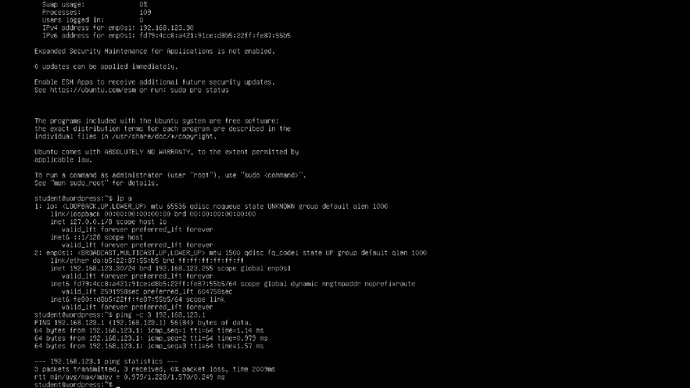
3.2 WPScan Database Update
Updated WPScan's vulnerability database, then enumerated WordPress components including themes and plugins.
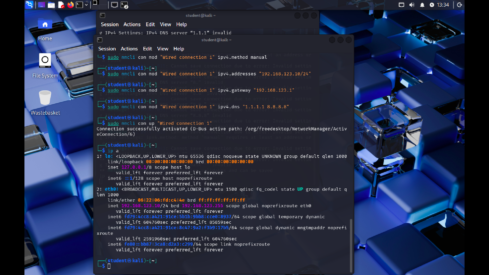
3.3 WordPress Enumeration
Enumerated WordPress components including themes and plugins to identify installed packages and versions.
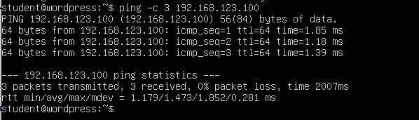
3.4 User Enumeration
Discovered valid usernames "student" and "nafisa" via WordPress REST API and author archive scanning.
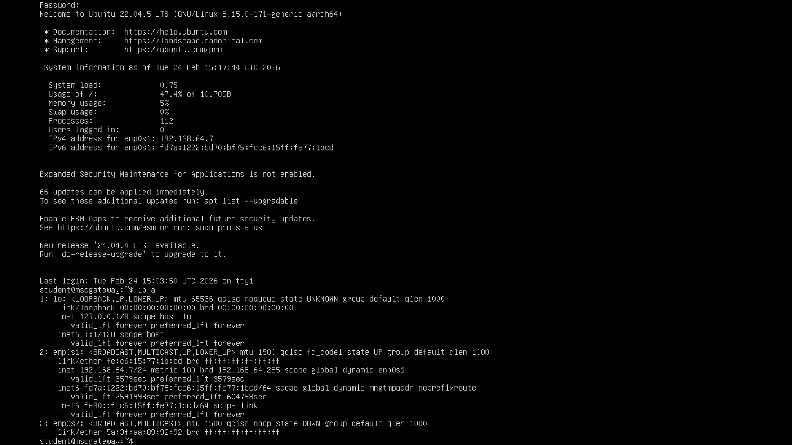
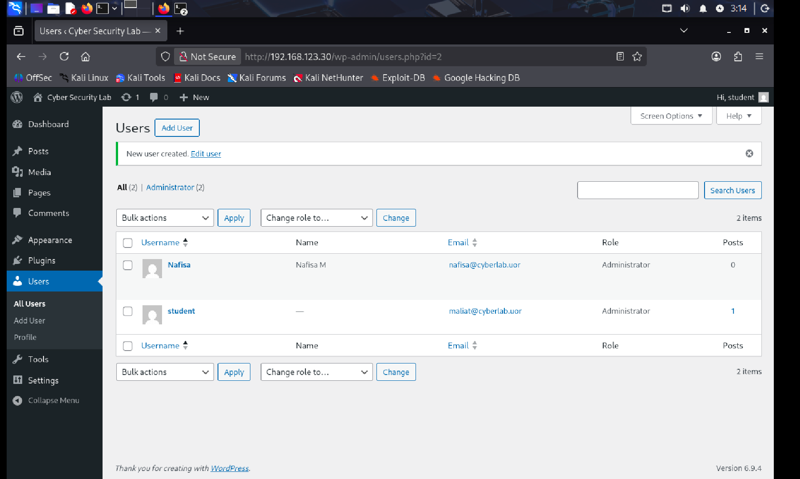
3.5 Password Brute Force Attack
Dictionary-based password attack against the nafisa account. Successfully cracked password "4444" — a trivially weak credential.
| Username | Password | Status | Notes |
|---|---|---|---|
| nafisa | 4444 | CRACKED | Simple numeric password, compromised via dictionary attack |
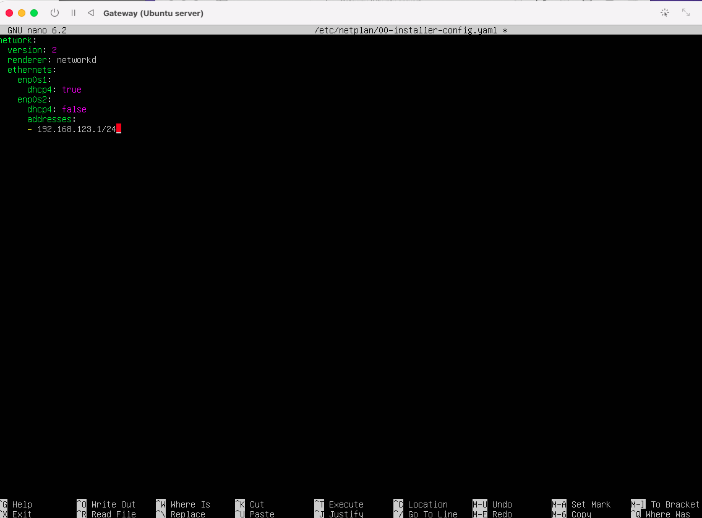
3.6 WordPress Login Verification
Successfully authenticated to WordPress dashboard using the cracked credentials.
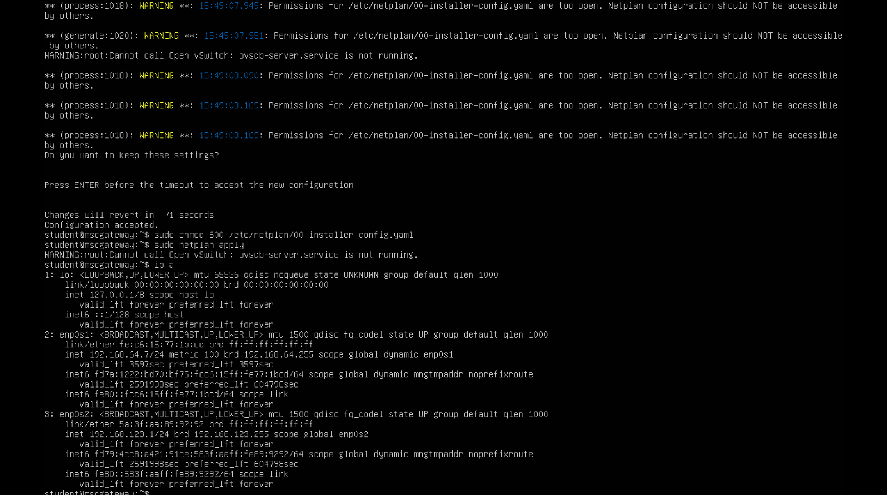
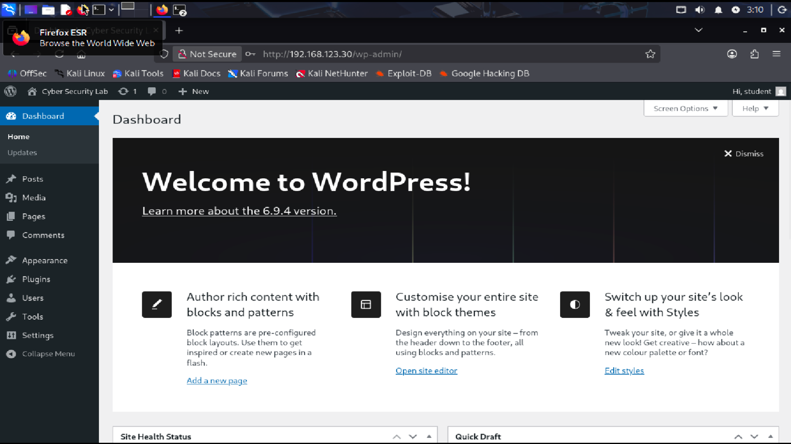
3.7 Vulnerability Scan Using API Key
Used WPScan API for CVE cross-referencing and detailed vulnerability assessment with automated database lookup.

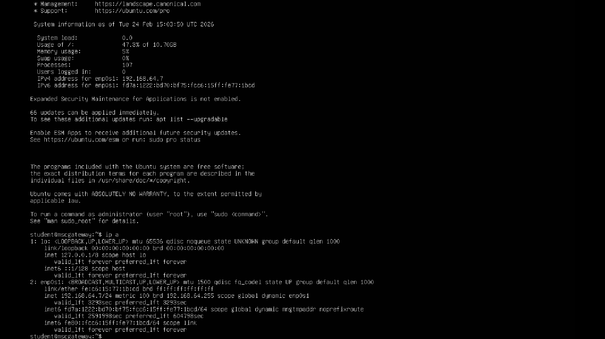
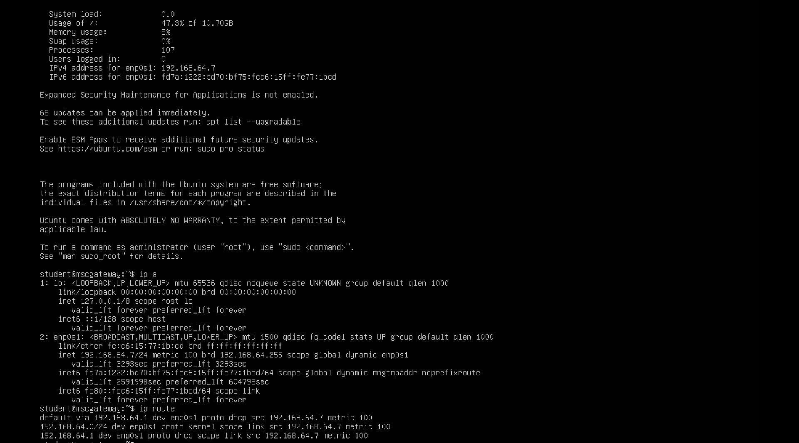
3.8 Throttled Scan
Demonstrated throttled scanning for production-safe assessment with rate limiting and stealth considerations.
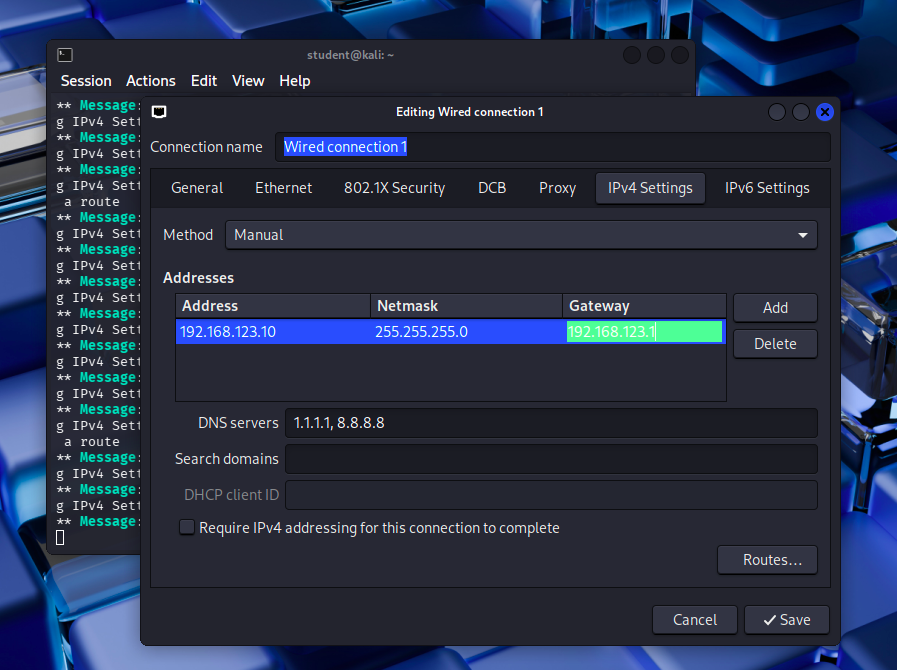
3.9 Environment Configuration Evidence
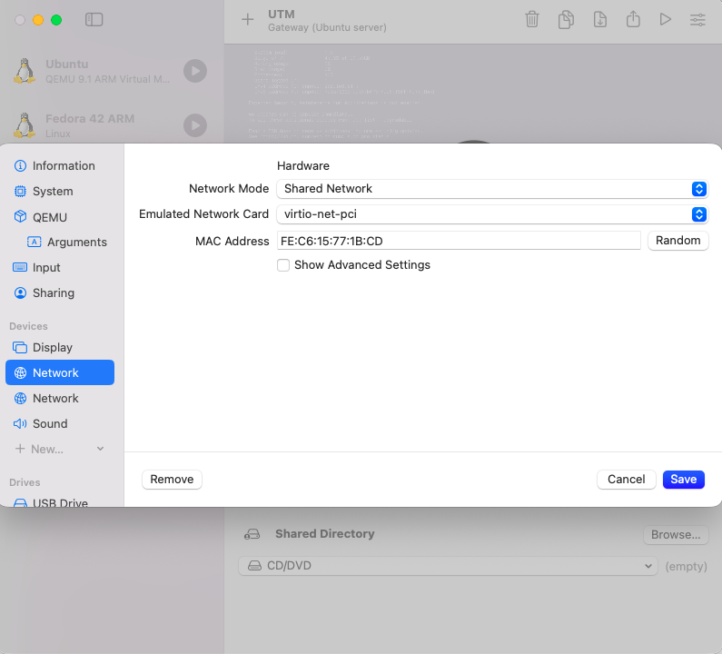
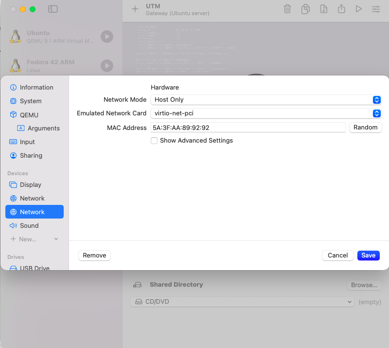
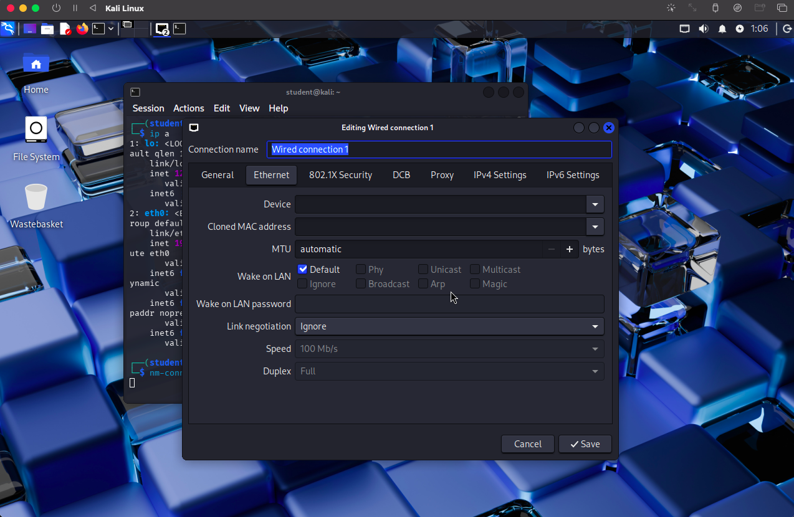
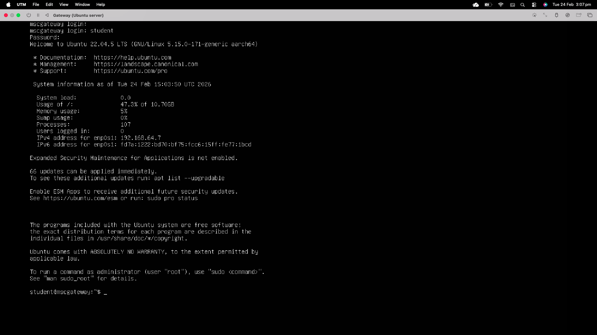
4. Security Risks Identified
| Risk | Description | Impact | Severity |
|---|---|---|---|
| Weak Passwords | Simple numeric password "4444" easily cracked via dictionary | Full account compromise | HIGH |
| User Enumeration | Valid usernames exposed via REST API and WordPress features | Enables targeted attacks | MEDIUM |
| Plugin/Theme Exposure | Component versions visible in source code and headers | Targeted CVE exploitation | MEDIUM |
| Automated Scanning | No restrictions on WPScan enumeration requests | Information gathering | MEDIUM |
| Outdated Components | WordPress and plugins may contain known vulnerabilities | Remote code execution potential | HIGH |
5. Recommended Security Improvements
- Enforce strong password policies with minimum 12+ characters, uppercase, lowercase, numbers, and symbols
- Implement rate limiting and CAPTCHA on login endpoints to prevent brute force attacks
- Disable user enumeration via REST API (/wp-json/wp/v2/users endpoint)
- Hide WordPress version and component information from HTTP headers and source code
- Keep WordPress, themes, and plugins updated to the latest patch versions
- Implement Web Application Firewall (WAF) to detect and block automated scanning tools
- Enable two-factor authentication for all administrator accounts
- Monitor and log all authentication attempts and unusual activities
6. Reflection
This lab demonstrated the power of automated vulnerability scanning tools and how quickly even a sophisticated application like WordPress can be compromised if basic security practices are not followed. The combination of weak passwords, exposed user information, and lack of brute-force protection created a perfect storm for account takeover.
The three-step attack pattern was straightforward: (1) Enumerate users, (2) Crack weak password, (3) Gain admin access. In a real-world scenario, the attacker could then install backdoors, deface the website, steal data, or use the server as a launching point for further attacks.
I learned that security is not just about deploying tools — it's about implementing defence in depth. Even a single strong password with rate limiting would have completely blocked this attack. This lab reinforced the principle that attackers only need one weakness to succeed, while defenders must protect against all potential attack vectors.
The use of automated tools like WPScan should always be done responsibly within authorised scope. These same tools are essential for legitimate security testing, but require proper access controls, clear documentation, and adherence to ethical guidelines.
7. Ethical Considerations
All testing was conducted within an isolated, authorised lab environment. The WordPress server was a learning target specifically set up for security training. No real systems or data were targeted. The methodology followed responsible disclosure principles and OWASP guidelines for ethical hacking.
8. AI Use Declaration
This report was written by hand. I reviewed my own notes and screenshots to summarise findings. No generative AI was used in the technical analysis, methodology, or conclusions.
9. References
- WPScan Official Documentation: https://github.com/wpscanteam/wpscan
- OWASP Top 10 Web Application Security Risks: https://owasp.org/www-project-top-ten/
- WordPress Security Best Practices: https://wordpress.org/support/article/hardening-wordpress/
- CWE-521: Weak Password Requirements: https://cwe.mitre.org/data/definitions/521.html
Lab 7 — Web Application Vulnerabilities: OWASP Juice Shop
Aim
To identify and exploit web application vulnerabilities in the OWASP Juice Shop application, understanding real-world attack vectors and mitigation strategies.
Introduction
OWASP Juice Shop is a deliberately vulnerable web application designed for security training. It teaches common vulnerabilities including cross-site scripting (XSS), broken access control, security misconfiguration, and sensitive data exposure. The application mimics a real e-commerce platform while containing intentional flaws for learning purposes.
This lab completed 11 out of 173 available challenges, covering a variety of vulnerability categories and attack techniques. Each challenge required manual inspection, code review, and exploitation of specific security weaknesses.
Apparatus / Environment
| Component | Details |
|---|---|
| Attacker VM | Kali Linux (ARM64) — 192.168.123.100 |
| Target Host | Ubuntu ARM64 + Docker — 192.168.123.111 |
| Application | OWASP Juice Shop (Docker container on port 3000) |
| Client Tools | Firefox, Firefox DevTools (DOM, Console, Sources, Storage, Network) |
| Version | Juice Shop v15.x |
Method — 5 Stages
Stage 1: Docker Installation & Setup — Installed Docker and launched Juice Shop container on port 3000.
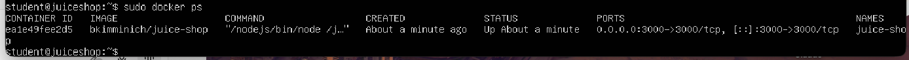
Stage 2: Application Startup — Verified Juice Shop running and accessible.
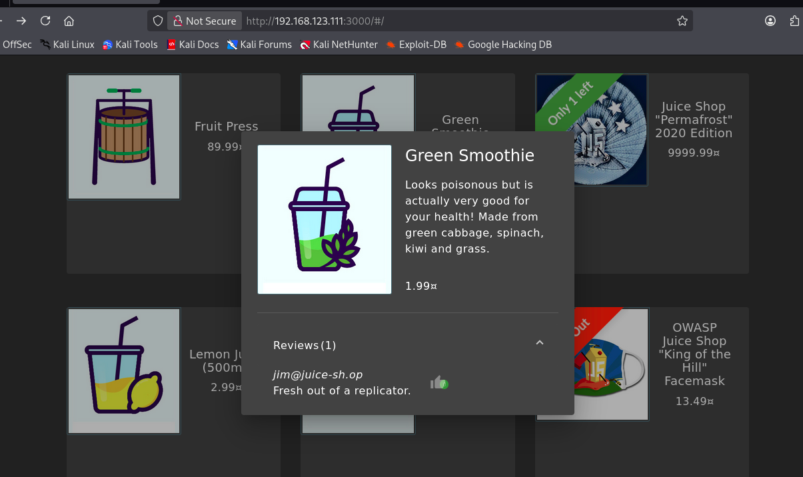
Stage 3: Feature Exploration — Navigated through shopping, checkout, and account features.
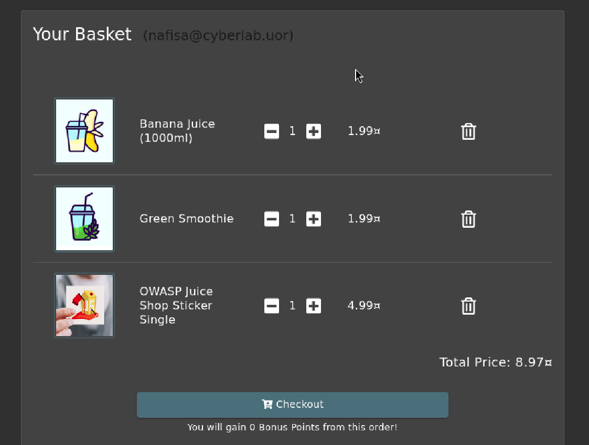
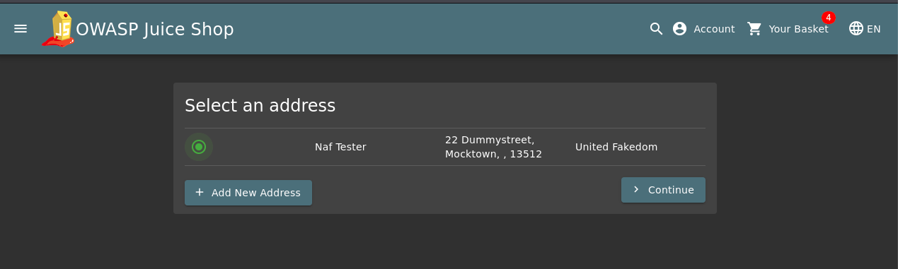
Stage 4: DevTools Inspection — Used Firefox DevTools to inspect DOM, network requests, and storage.
Stage 5: Challenge Completion — Systematically exploited 11 vulnerabilities.
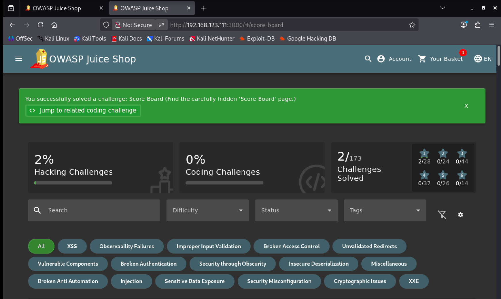
Observations
The application appeared normal at first glance but contained numerous intentional security flaws. DevTools proved invaluable for discovering hidden endpoints, monitoring API calls, and identifying exposed sensitive information. Many challenges could not be solved by using the application normally—they required modifying requests, accessing hidden pages, or manipulating client-side validation. Several challenges involved chained exploits, reflecting real-world complexity.
Challenges Completed (11/173)
Challenge 1: Privacy Policy — A05:2021 Security Misconfiguration
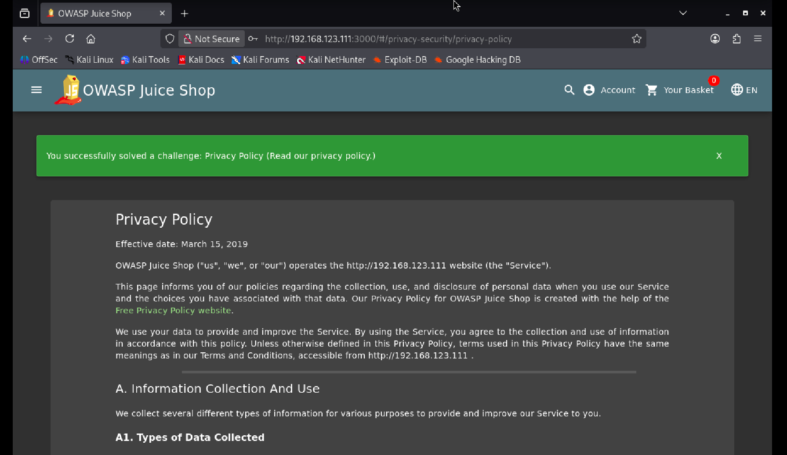
Challenge 2: Score Board — A05:2021 Security Misconfiguration
Challenge 3: Exposed Metrics — A05:2021 Security Misconfiguration
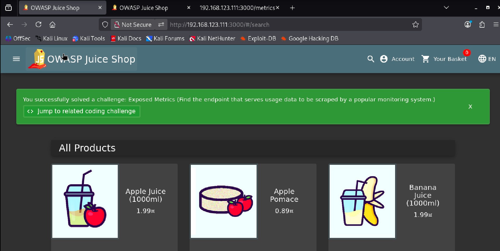
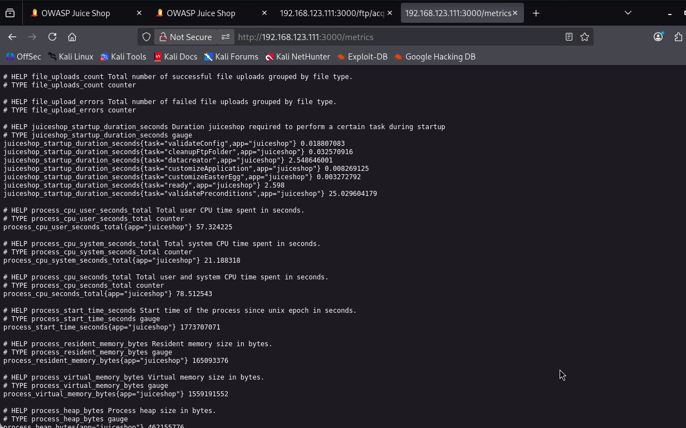
Challenge 4: Error Handling — A05:2021 Security Misconfiguration
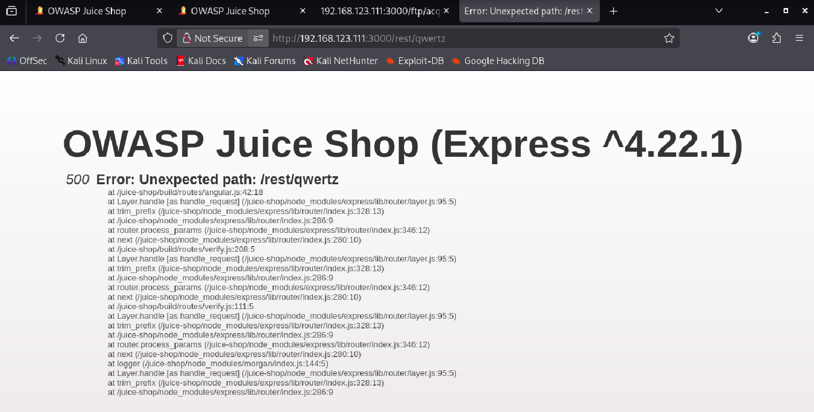
Challenge 5: DOM XSS — A03:2021 Injection
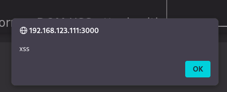
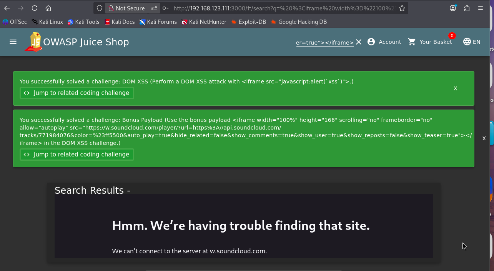
Challenge 6: Zero Stars — A07:2021 Improper Input Validation
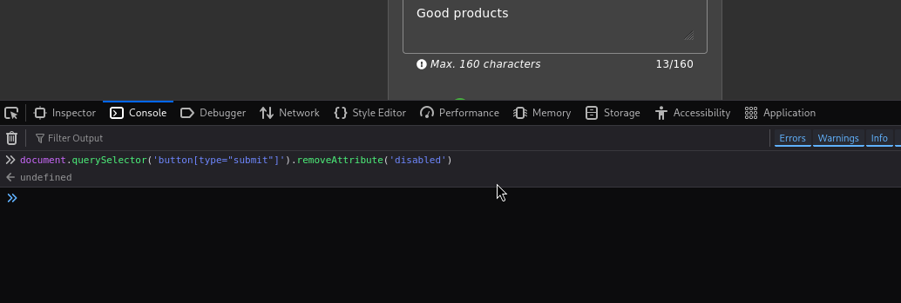
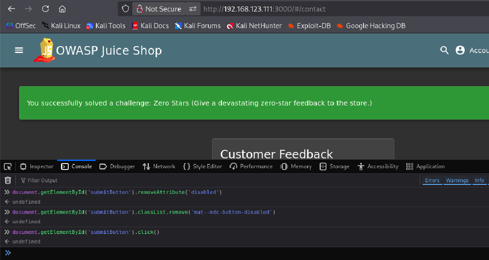
Challenge 7: Confidential Document — A01:2021 Broken Access Control
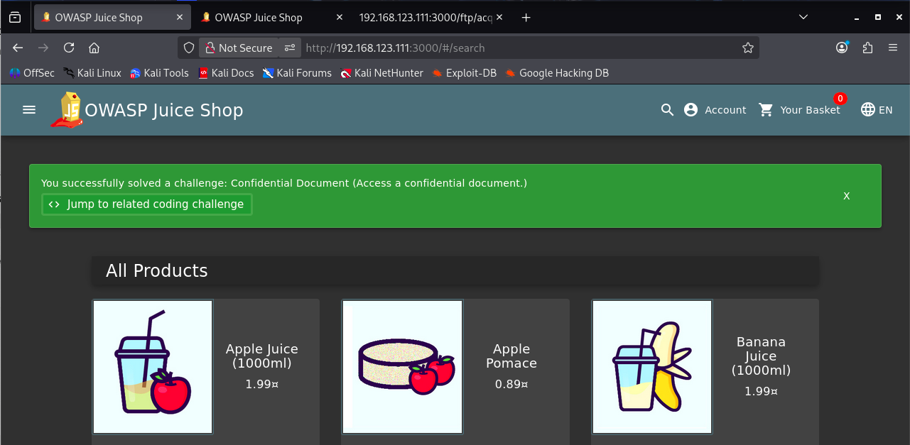
Challenge 8: Outdated Allowlist — A05:2021 Unvalidated Redirects
Challenge 9: Mass Dispel — A05:2021 Security Misconfiguration
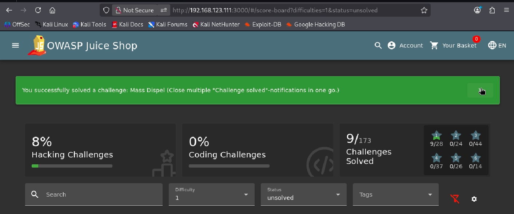
Challenge 10: Repetitive Registration — A07:2021 Improper Input Validation
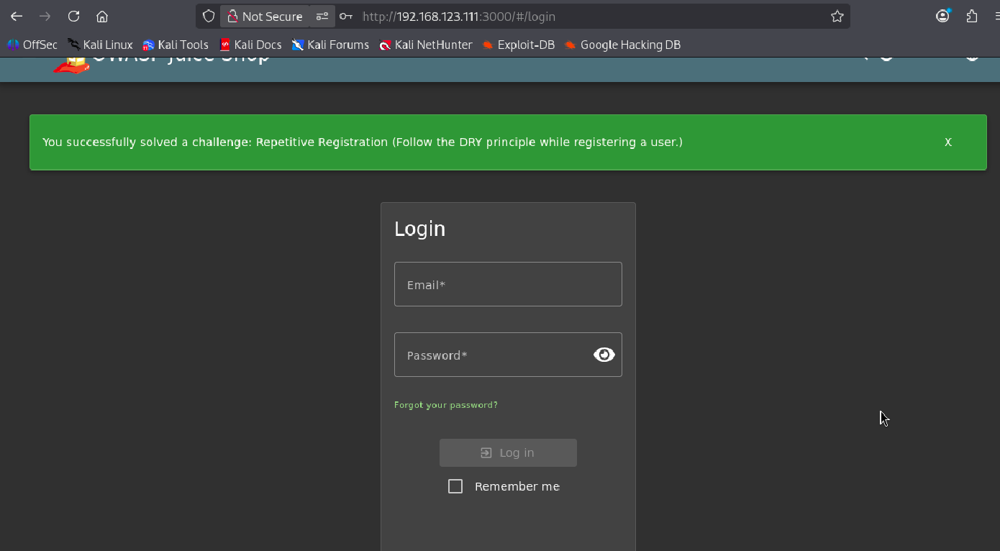
Challenge 11: Chatbot / Bonus Payload — A01:2021 Broken Access Control
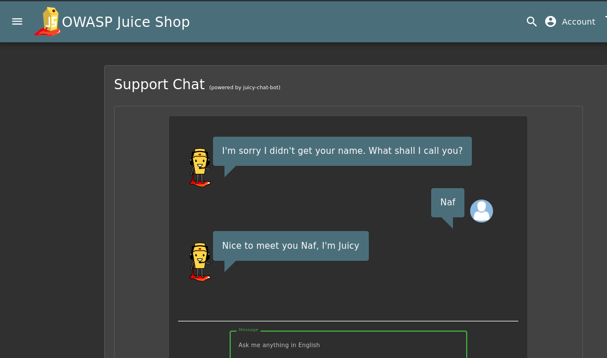
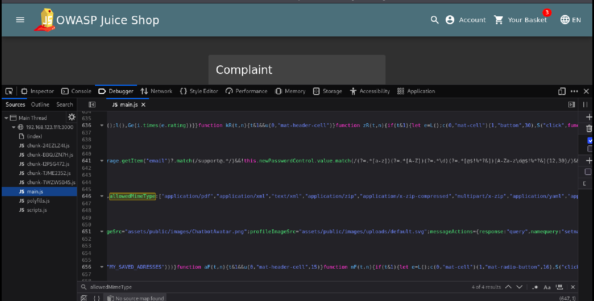
Results
| Challenge | Category | Difficulty | Status |
|---|---|---|---|
| 1. Privacy Policy | Security Misconfiguration | ★ | SOLVED |
| 2. Score Board | Security Misconfiguration | ★ | SOLVED |
| 3. Exposed Metrics | Security Misconfiguration | ★ | SOLVED |
| 4. Error Handling | Security Misconfiguration | ★ | SOLVED |
| 5. DOM XSS | Injection (XSS) | ★ | SOLVED |
| 6. Zero Stars | Improper Input Validation | ★ | SOLVED |
| 7. Confidential Doc | Sensitive Data Exposure | ★ | SOLVED |
| 8. Outdated Allowlist | Unvalidated Redirects | ★ | SOLVED |
| 9. Mass Dispel | Security Misconfiguration | ★ | SOLVED |
| 10. Repetitive Registration | Input Validation | ★ | SOLVED |
| 11. Chatbot / Bonus Payload | Broken Access Control | ★★ | SOLVED |
Vulnerability Analysis Summary
| Vulnerability Class | Count | Examples | Severity |
|---|---|---|---|
| Security Misconfiguration | 6 | Exposed metrics, error handling, privacy policy | HIGH |
| Broken Access Control | 2 | Confidential documents, chatbot payload | HIGH |
| Injection (XSS) | 1 | DOM XSS in search field | HIGH |
| Improper Input Validation | 2 | Zero stars, registration fields | MEDIUM |
Discussion
Multiple vulnerabilities coexisting in a single application stemmed from basic security oversights: missing validation, unprotected endpoints, verbose error messages, and client-side security controls. Reconnaissance (inspecting storage, source code) often revealed enough information to compromise the application, aligning with the principle that attackers take the path of least resistance.
The Zero Stars challenge was the clearest example of "Never trust client-side validation." Browser prevention failed to stop simple HTTP request bypassing. This principle applies to all client-side security: authentication checks, authorisation decisions, rate limiting, and input validation must always be server-side.
The experience highlighted why security training is essential for developers. Many vulnerabilities could be completely prevented with security-aware development practices, code review processes, and proper testing before deployment.
Conclusion
Completing 11 challenges reinforced core web security principles. Each challenge told a story about a different security failure. Rather than collecting vulnerability names, understanding why each vulnerability was dangerous and how attackers exploit it in practice provided real value.
I would recommend Juice Shop to any developer learning security—it provides a safe environment to experiment with attacks, understand vulnerabilities deeply, and build intuition about how real systems fail.
Reflection
This lab was enjoyable because each challenge was engaging and educational. The gamified scoreboard made the experience fun while maintaining educational value. One surprising insight: unminified JavaScript reveals system architecture, APIs, and sometimes credentials. Developers often assume JavaScript is hidden because it's client-side, but it's fully visible and analysable.
The lab reinforced that vulnerability scanning is a starting point—humans must verify, analyse impact, and decide remediation. Automation helps identify issues; human insight determines criticality.
AI Use Declaration
This report documents my hands-on work completing Juice Shop challenges. I took screenshots, worked through each vulnerability, and wrote the analysis based on direct observation and testing. No generative AI was used.
References
- OWASP Juice Shop: https://owasp.org/www-project-juice-shop/
- OWASP Top 10 2021: https://owasp.org/Top10/
- CWE Top 25: https://cwe.mitre.org/top25/
- OWASP Testing Guide: https://owasp.org/www-project-web-security-testing-guide/
Lab 8 — Vulnerability Assessment: Nmap & SSH
Abstract
Comprehensive network reconnaissance and vulnerability assessment on a WordPress server using Nmap for enumeration, SSH for access and tunnelling, and Nikto for web assessment. Multiple scanning techniques tested including ping sweeps, port scans, OS fingerprinting, and service version detection. SSH tunnelling and secure file transfer demonstrated practical exploitation techniques. Findings revealed multiple attack surfaces and misconfigurations.
Introduction
Network reconnaissance is the first phase of security assessment. This lab combined complementary tools: Nmap for network-level reconnaissance, SSH for system-level access and tunnelling, and Nikto for application-level assessment.
Aim and Objectives
Perform complete vulnerability assessment using network scanning, service enumeration, and web assessment techniques. Objectives include: discovering active hosts, identifying open ports, determining service versions, performing SSH validation and tunnelling, conducting web application assessment, and identifying security misconfigurations.
Materials / Environment
| Component | Details |
|---|---|
| Attacker | Kali Linux (ARM64) — 192.168.123.100 |
| Gateway | Ubuntu Gateway — 192.168.123.1 |
| Target | WordPress Ubuntu Server — 192.168.123.30 |
| Tools | Nmap, SSH, SCP, SFTP, Nikto, curl |
Methodology & Results
4.1 Connectivity Verification
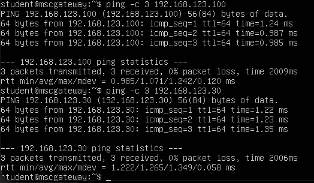
4.2 Host Discovery
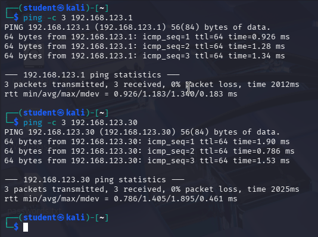
4.3 Port Scanning & Service Detection
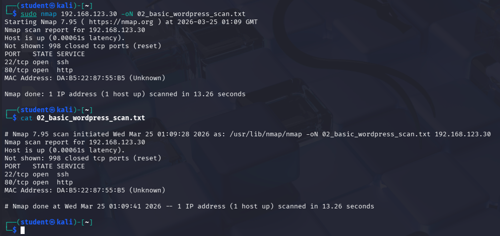
4.4 Aggressive Scanning
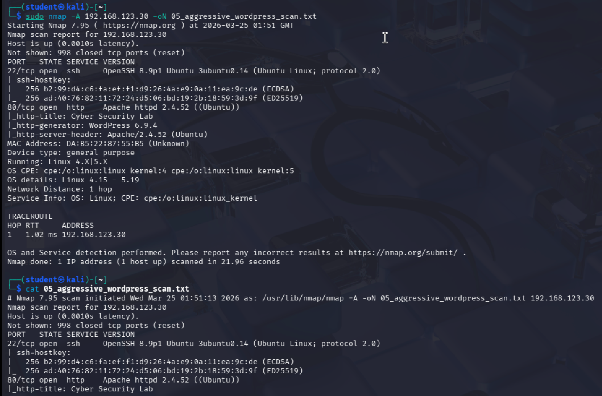
4.5 Vulnerability Scripting
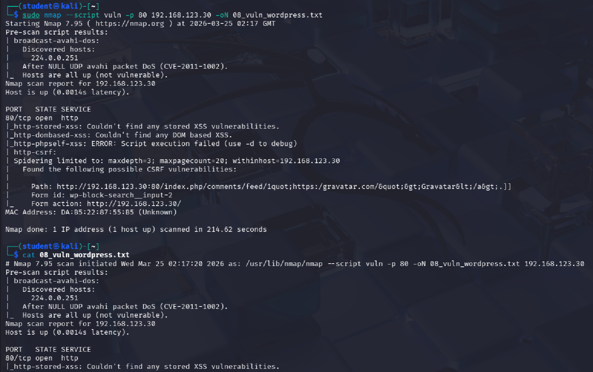
4.6 SSH Authentication & Key Deployment
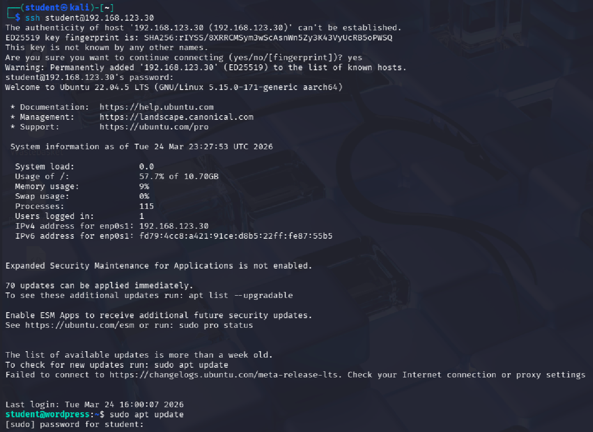
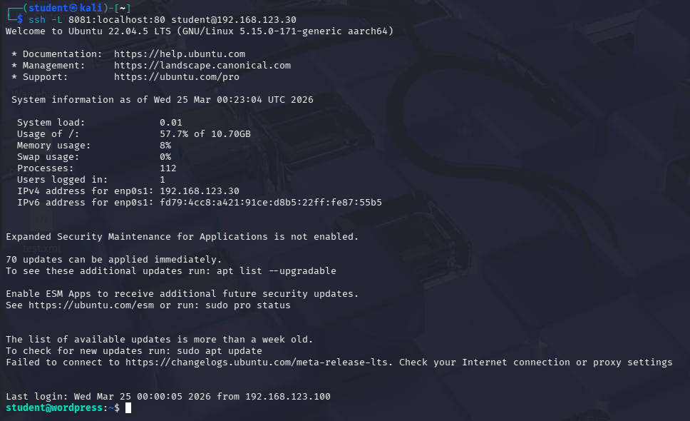
4.7 SFTP File Transfer
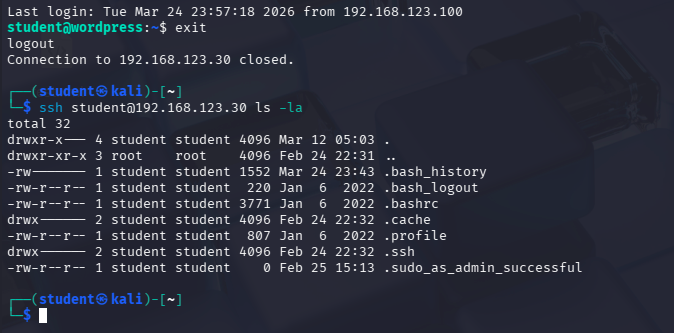
4.8 SCP Batch Transfer
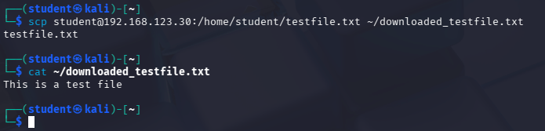
4.9 Remote File Operations
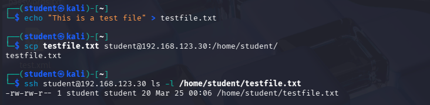
4.10 Service Enumeration
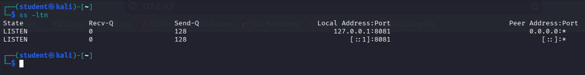
4.11 SSH Local Port Forwarding
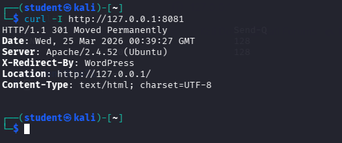
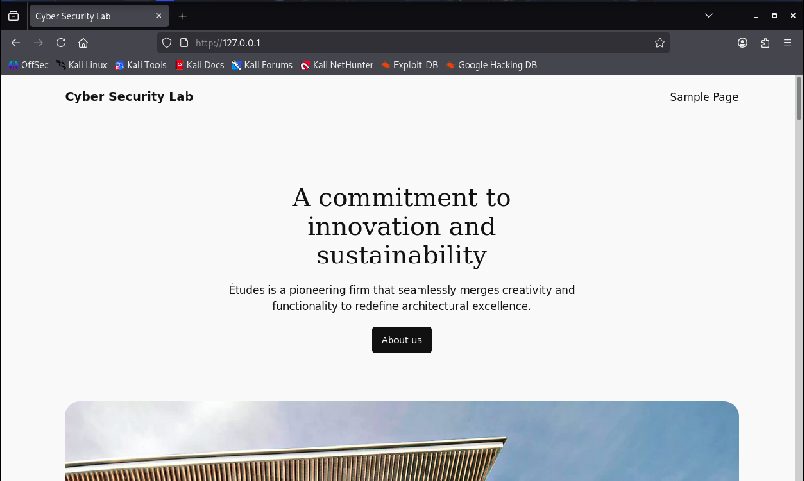
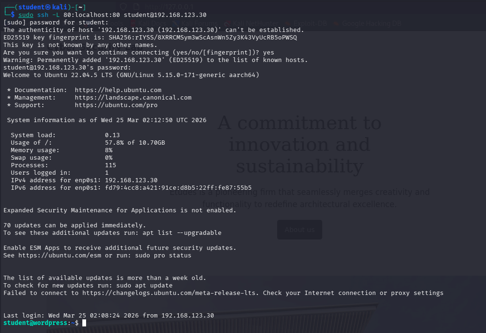
4.12 Verbose Logging & Bandwidth Monitoring
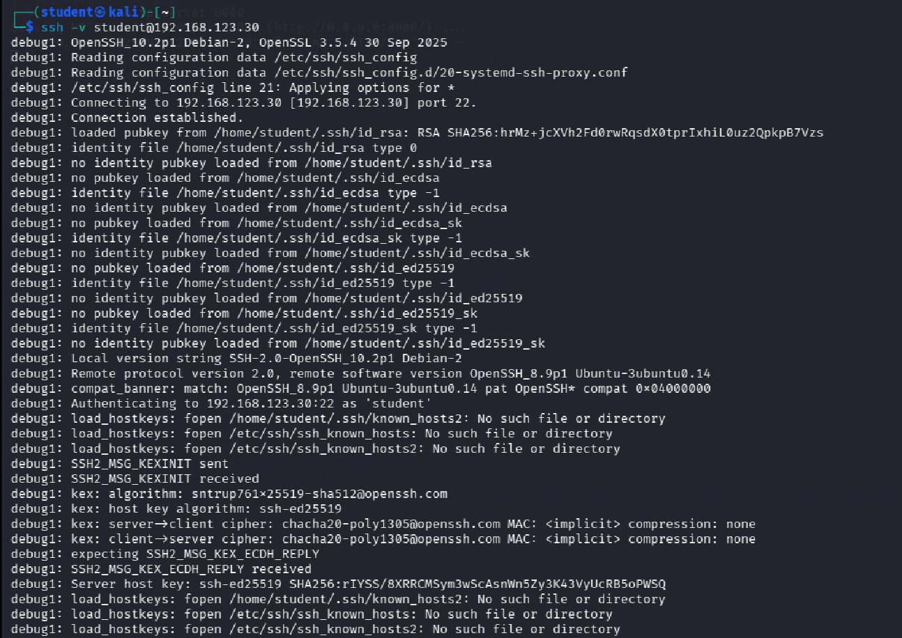
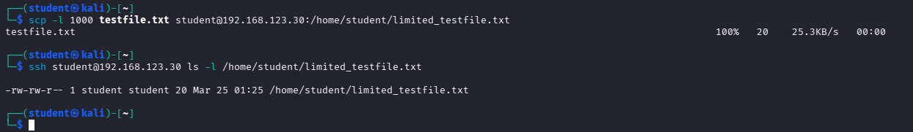
Web Application Assessment
5.1 Socket Statistics
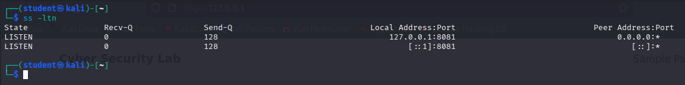
5.2 Nikto Web Scan
5.3 HTTP Header Analysis
5.4 WordPress Headers
Key Findings
| Finding | Severity | Impact |
|---|---|---|
| OpenSSH 8.9p1 exposed | INFO | Enables CVE lookup |
| Apache 2.4.52 visible | INFO | Facilitates version-specific exploits |
| WordPress 6.9.4 identified | MEDIUM | Known vulnerabilities searchable |
| Missing security headers | MEDIUM | Vulnerable to XSS, clickjacking |
| Weak CSRF protection | MEDIUM | Susceptible to state-changing requests |
Discussion
The assessment revealed a typical small-to-medium business setup lacking security headers and running unpatched versions. However, basic practices (no defaults, SSH support) prevented trivial attacks. Nmap and Nikto provided complementary views—network vs. application level. Thorough assessment requires multiple tools and analysis at different stack layers.
SSH access demonstrated system-level compromise potential and how tunnelling hides activities from network monitoring. Multiple findings were exploitable in real attacks: missing headers enable XSS, weak CSRF enables social engineering, lack of detection leaves systems blind to reconnaissance.
Conclusion
Lab successfully demonstrated complete reconnaissance and vulnerability assessment workflow from initial discovery to detailed analysis. Methodology revealed multiple security weaknesses enabling compromise. Lab emphasized that attackers and defenders use the same tools—authorization and intent differ.
Reflection
Lab was valuable combining tools with practical exploitation. Hands-on experience interpreting Nmap results beats documentation reading. SSH tunnelling concept of encrypting traffic through compromised systems was intellectually interesting and practically powerful. Recognized where different tools fit: Nmap excels at rapid enumeration; Nikto better for detailed application assessment. Combining multiple tools requires understanding strengths/limitations.
Lab reinforced that assessment is craft not checklist. Running tools is easy; interpreting results and determining impact requires experience.
AI Use Declaration
Report documents hands-on experimentation with Nmap, SSH, and Nikto. All commands executed by me, all screenshots from my testing, analysis based on direct observation. No AI used.
References
- Nmap Official Documentation: https://nmap.org/book/
- OpenSSH Manual: https://man.openbsd.org/ssh
- Nikto Web Scanner: https://cirt.net/Nikto2
- OWASP Testing Guide: https://owasp.org/www-project-web-security-testing-guide/
Lab 9 — Vulnerability Scanning & Mitigation: Nessus
Introduction
Nessus is widely deployed vulnerability scanner in cybersecurity industry. Lab deployed Nessus on ARM64, configured multi-host scanning, and interpreted vulnerability reports. Beyond identifying vulnerabilities, demonstrated remediation and mitigation—showing vulnerability management as ongoing process. Lab addressed real-world scenario: when patches unavailable, what compensating controls reduce risk? Implemented ImageMagick security policy restrictions as practical mitigation.
Lab Environment
| Component | Details |
|---|---|
| Scanner Host | Kali Linux (ARM64) — 192.168.123.100 |
| Gateway | Ubuntu Gateway — 192.168.123.1 |
| Target 1 | Ubuntu Desktop — 192.168.123.40 |
| Target 2 | WordPress Ubuntu Server — 192.168.123.30 |
| Nessus Version | Essentials Plus v10.11.3 (aarch64) |
Methodology
3.1 Nessus Installation & Configuration
3.2 Network Configuration
3.3 Nessus Service Startup
3.4 Target Verification & Scanning
3.5 Vulnerability Scanning & Analysis
Results
Mitigation Workflow
5.1 Patch Application Attempt
5.2 Compensating Control Implementation
5.3 Mitigation Verification
Vulnerability Summary
| Finding | CVSS | Severity | Remediation |
|---|---|---|---|
| ImageMagick RCE | 7.8 | HIGH | Upgrade OR policy.xml |
| Integer Overflow | 5.5 | MEDIUM | N/A for 64-bit |
| Auth Fail (Ubuntu) | — | LOW | Configure creds |
Analysis
Lab identified realistic vulnerability management scenario: critical vulnerabilities exist, patches unavailable. Many organisations face this situation. Rather than accepting risk, compensating controls reduce exploitability. policy.xml mitigation exemplified defence-in-depth: even with ImageMagick bug, restricting vulnerable coders prevents exploitation. Not perfect—determined attackers might find alternatives—but substantially reduces risk until proper patches available.
Multi-target scanning demonstrated comprehensive assessment across environment. Vulnerability management requires understanding complete attack chain, not just collecting CVE numbers.
Conclusion
Lab successfully demonstrated enterprise vulnerability management: deployment of professional scanning tools, interpretation of detailed reports, prioritisation of findings, and implementation of remediation workflows. Emphasis on compensating controls when patching impossible showed that perfect solutions rare—security professionals work with available resources to reduce risk.
Reflection
Deploying Nessus on ARM64 straightforward—modern security tools support diverse architectures. Network troubleshooting reminded me scanning reveals infrastructure issues beyond vulnerabilities. Appreciated emphasis on compensating controls. Vulnerability management not binary—when patching impossible, alternative mitigations reduce risk pragmatically. CVSS scores useful for triage but insufficient alone—reading CVE details essential. Automation helps; human analysis critical.
Lab reinforced vulnerability scanning starting point not complete assessment. Humans verify, analyse impact, decide remediation.
AI Use Declaration
Report documents hands-on work with Nessus, network configuration, vulnerability remediation. All screenshots from my testing, configuration changes mine, analysis based on direct observation. No AI used.
References
- Nessus Vulnerability Scanner: https://www.tenable.com/products/nessus
- ImageMagick Security Policy: https://imagemagick.org/script/security-policy.php
- CVSS v3.1 Specification: https://www.first.org/cvss/v3.1/specification-document
- NVD National Vulnerability Database: https://nvd.nist.gov/
Nafisa Maliat
University of Roehampton London | MAL23558263
This portfolio documents my work for the CMP-X305 Cyber Security module (Level 6). It covers four lab exercises spanning web application security, vulnerability assessment, network scanning, and mitigation techniques — all carried out on Apple Silicon using UTM virtualisation.
nafisa
nafisa@kali:~$ cat /etc/modules.txt
CMP-X305 Cyber Security
nafisa@kali:~$ echo "Tools I used"
WPScan | Nmap | SSH | Nikto | Nessus | Docker | UTM | Firefox DevTools
nafisa@kali:~$ █